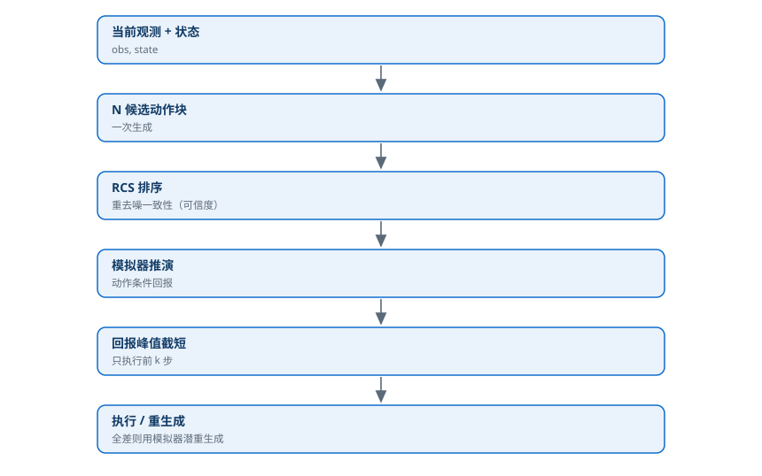

一次生成 N 个候选动作块 · RCS 重去噪一致性 · 动作条件模拟器回报 · 回报峰值截短执行
τ0-WM 在推理期做闭环：一次生成 N 个候选，用 RCS 判断哪个不是偶然采样；再用动作条件模拟器推演回报，按回报峰值决定执行几步。
| 项 | 值 |
|---|---|
| 候选 | N 个动作块；RCS 用若干随机时间步重去噪误差 |
| 精炼 | 模拟器推演 → 逐步回报 |
| 执行 | 回报峰值前 k 步；全差则用模拟器潜重生成 |
| 结果 | 长程任务成功率提升（论文表格，L3） |

物理：RCS 高=不是偶然采样；模拟回报决定「执行几步」，避免开环执行整段。
物理：重去噪误差的负值：候选越可复现，越可信。
物理：先按可信度选候选。
物理：按模拟回报峰值决定执行几步。
仓库 sii-research/tau-0-wm：web_infer_utils/posttrain_taco_play_withTTC/TauPolicyTTC.py（源码级）。
def play(obs, state, N_proposals=8):
# 物理：候选 → 可信度 → 模拟回报 → 截短执行
pred = pipeline.infer(obs, state, N_proposals=N_proposals, get_RCS=True)
cands, rcs = pred['action'], pred['rcs'] # [N,T,C], [N]
best = cands[rcs.max(dim=0).indices] # RCS 最高者
if sim_refine:
sim_rewards = sim_pipeline.infer(actions=cands, return_reward=True)
if sim_rewards.max() < 0:
best = re_predict_with_sim_latent(...) # 全差 → 用模拟器潜重生成
else:
best = cands[best_idx, :argmax(sim_rewards)+1]
return best返回 方法精读 Wiki 索引 ｜ 博客：VLA/WAM 的 RL 后训练实现版